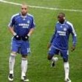

|  | Alex |
| Gender | Male |
| Ethnic | Brazilian |
| Job | Brazilian Footballer |
| Desc | xxxx |
Affiliation
| Org | Brazil National Team |
| Club as Player | Palmeiras |
| Paris Saint-Germain | |
| Fenerbahce | |
| Chelsea |
2012 01 05 Retrieve
[Fenerbahce midfielder and former team-mate in Palmeiras Alex led the tributes after the news broke, thanking Marcos for his role in the club’s 1999 Copa Libertadores triumph] Thank you so much for the 99 Libertadores. Thank you so much for your friendship. I wish you every success now post-football. Live forever, Marcao!
2016 09 22 Retrieve
[Alex pay homage to ‘fantastic’ Ronaldo] It is hard to describe Ronaldo, I knew him back at Sao Cristovao and the Brazil youth team and I watched him grow into the player he was. One of the greatest of all-time, even with all his physical problems, the knee injuries, he always battled back and all those who had the pleasure of seeing him play, or like me had the greater pleasure of playing with him, know he was great. The nickname the Italians gave him fit perfectly. He is a phenomenon
2018 05 03 Retrieve
[David Luiz has received the backing of former Chelsea defender Alex] He has been out for two or three months with a knee problem. He was very good last year, it worked out well in the Conte line-up with three defenders. There are many defenders who like to play in this line-up. David Luiz did very well as a libero. Unfortunately, he did not start well this season. I’m not sure what happened, probably a problem, so he lost his place in the starting line-up. I’m very fond of him. He’s a great friend, a great person. Could he leave? It’s difficult to talk, every day you may be surprised… We do not know yet if the coach will continue. Sometimes a new coach arrives, and the player ends up receiving more opportunities. David is an experienced player. For me, he should not leave, because Chelsea is an exceptional club. I think he should stay and try one more time. For the quality he has, the player that he is, the opportunities will appear. I have seen great players, especially in my position, who lost their place in their teams, for example John Terry, a player I always saw as the best player in the world of my position at that time. [Luiz], due to injury and some other things, has also lost his spot. David Luiz is still a great defender, and he’s not that old! You have to turn things around.
You either love or hate Mourinho? I thought exactly the same, especially when I got to Chelsea! I was 24 years old, full of fears, having listened to and read a lot about him in the press… But I found a person who helped me a lot. We worked only three months together, yet he has been a big part of my career. I was very surprised to find a Mourinho who was totally contrary to what they said and wrote
The work of Villas-Boas on the field was very good, the players accepted it well. He has a style similar to that of Mourinho. I ended up being turned away by him, but to this day I know I did not make any mistakes, neither against the team nor against him. [Nicolas] Anelka and I ended up apart, we were training separately. But it’s soccer stuff, it’s already in the past…I did not expect all that. I did not even expect to leave Chelsea. What people said a lot was his lack of respect, especially with [Frank] Lampard. He put Lampard in reserve and did not say anything. A player like Lampard or Terry is not that you have the need to justify yourself to them, but it’s important to have a conversation. I also saw Ancelotti and Guus Hiddink putting important players in reserve, but they always talked to them before
2018 05 03b Retrieve
[Ex-Chelsea star Alex reveals failed Arsenal transfer] We talked when I was about to leave Chelsea. I was away, I received a call from an Arsenal director, who asked me the values of my salary, if I was interested. The conversation was very quick, but he did not call again. In the end, I sealed a move to PSG. My wish was not to leave Chelsea, but I had been training alone for three months, it was not easy. At first me and [Nicolas] Anelka trained together, but then he left, and I was alone. If Arsenal had come up with a good, concrete proposal, I would have taken it. I repeat: it was not a desire to trade Chelsea for Arsenal, but I would have accepted it. I wanted to play
My knee? Thank God I’m healing well, feeling better every day. Of course, it is not easy, it takes training and doing gym work every day to stay strong. I’m still not 100 per cent, I’m recovering every day. It is a cartilage injury, so you have to take a little more care. It is good to avoid overdoing it, the impact may not do the knee any good the next day. But I’m managing it well. At the end of 2016, my wife and I sat down, and as we talked to the doctors, we felt it would be very difficult to continue playing at a professional level, so we decided to announce that I would stop. Today I do not see it this way, because of the training I’ve been doing and my recovery. It took a little longer than expected, but I felt better. I’ve been training more in the sand, but I’m better and more confident. If I feel even better and there is some possibility I would like [to return to play]. Stopping playing is the most difficult decision in a player’s life
2018 05 03c Retrieve
[Ex-Chelsea star Alex singles out Zlatan Ibrahimovic as his favourite striker] Who was the best striker? It’s a very difficult question. I particularly like Ibra much more, although unfortunately I did not play with him at Inter Milan and Juventus, where he had his best seasons. For me he is more complete… But it is very difficult to answer. I saw Drogba and Shevchenko scoring in almost every game at Chelsea. They solved games on their own. The question is a tough one, but I choose Ibra.
He does it all for fun, he likes to create controversy for fun. He is not a bad person. He sometimes goes to an interview prepared to create a controversy, something that everyone will be talking about. He is an excellent professional, he is a player that energises those around him. Of course it is not easy to play alongside him, as it was with Lucas Moura in PSG, who had a bit of difficulty in the beginning. His energy can sometimes be frightening
2019 02 23 Retrieve
[Former Chelsea defender Alex says he had the wrong idea of Jose Mourinho] was surprised with Mourinho. I had that impression of him as a super arrogant person with a massive ego, because of what we saw in the media, but I ended up seeing another thing. I worked with him for just three months at Chelsea and everyday Mourinho used to sit by my side and and we talked a lot. I liked him very much as a person and as a coach. Of course he has his own way of bringing out the best of the players, and a lot of times the players don’t agree with him. Sometimes he can hurt, he is very severe with some players… I saw Andriy Shevchenko suffering a bit with this at Chelsea. Mourinho used to put a lot of pressure on Shevchenko and some players don’t work well with this, but for me he is fantastic as a person and as a coach. I arrived in 2007 and I can say that our group accepted him very well, and it seems to me that the players today don’t. In his latest jobs he always ended up fighting with someone, especially the big stars. We saw that at Manchester United too. It seems that the players from today don’t accept his style, his way of working. But in that [Chelsea] team, what I saw were players who really liked him
I had great expectations for Sarri because I played against his Napoli team and it was really tough. They were a team with no stars, just Gonzalo Higuain up front but tactically it worked. They were flying. As a fan I created expectations but it’s not happening… They suffered that defeat to Manchester City, 6-0, and this is not normal for Chelsea, right? It depends a lot on the coach I think. Because of what is happening at Chelsea, he has to recover as fast as possible. Otherwise I think that if he loses… it’s difficult down there. Abramovich is not that patient and there’s this result against City. Things got really bad for the manager. I think it’s very difficult. He must recover fast and get good results
During my time, yes. I can’t speak about now because I’m not there. But it was during my time. There were lot’s of people hoping that things wouldn’t end well and a coach ended up leaving. I think this happens in a lot of clubs, I think it’s normal in football. And Chelsa became very famous especially after what happened with Luiz Felipe Scolari, with some people saying Didier Drogba had a meeting with Abramovich… I think it happens at all clubs, I don’t see much of a difference. Sometimes players really hope that managers can be sacked
2019 02 26 Retrieve
[Kepa farce raises more accusations that player power is out of control at Chelsea] During my time, yes. I can’t speak about now because I’m not there. But it was there during my time. I saw a lot of situations [like Kepa], especially when the manager wasn’t fond of the players. There were lots of people hoping that things didn’t end up going well and he (the coach, in general) ended up leaving. I think this happens in a lot of clubs. I think it’s normal in football. And Chelsea became very famous especially after what happened with Felipe Scolari, with some people saying Drogba had had a meeting with [owner Roman] Abramovich.
I think it happens in all clubs; that a player really hopes that managers will be sacked. For example, I think his inexperience and youth at the time counted against Andre Villas-Boas at Chelsea. I loved his training sessions, he was able to interest the players. But, in my opinion, he was very arrogant in some situations and made some mistakes, especially when he put some great players on the bench. He did it with Lampard. The general complaint was this: he didn’t speak a lot with the players and, when you put someone such as Lampard on the bench, it’s not that you have to explain yourself, but I’ve learned with [Carlo] Ancelotti and with Guus Hiddink that it’s better if you sit with the player to help him understand the situation a little bit more. Villas-Boas didn’t do that. He simply put who he wanted to and did what he wanted to. I think it’s a little arrogant and, unfortunately, the dressing room ended up in a bad vibe because a lot of players were talking and complaining.